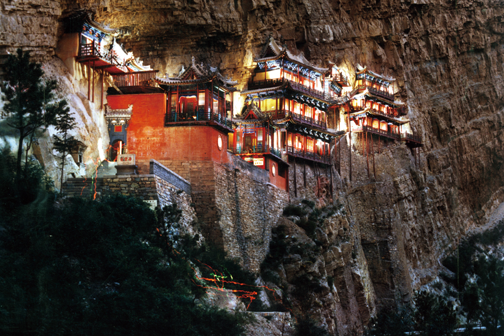
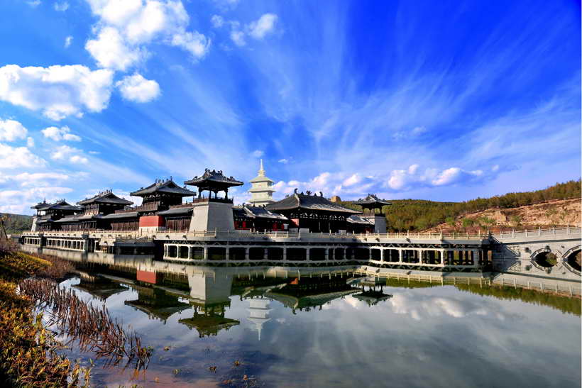
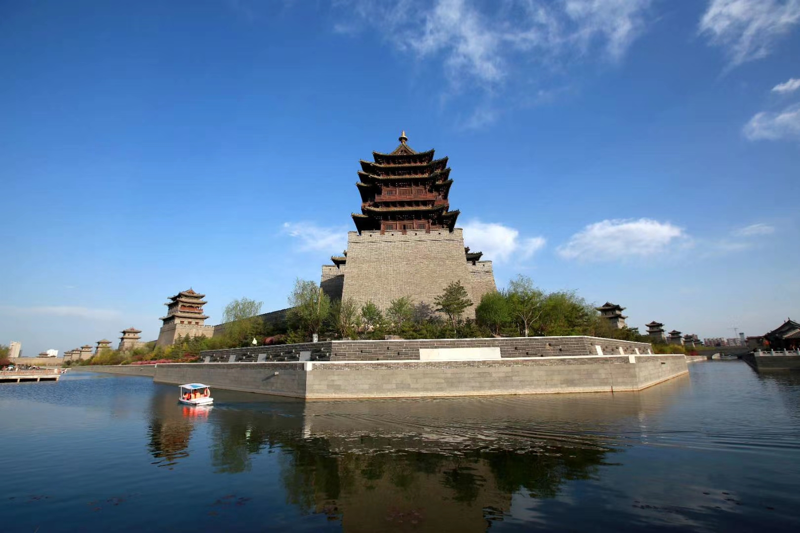

大同是中国优秀旅游城市、国家园林城市。1991年5月,国家旅游局公布大同为首批中国国线景点旅游区。它是以云冈石窟为重点,名城大同为中心的特色文化旅游区。 区内有世界文化遗产一处,国家重点文物保护单位27处,其他各级文物保护单位300余处。其中居全国“文物之最”就有7处:云冈石窟为我国现存规模最大的石窟群, 被联合国教科文组织定为世界文化遗产;上华严寺大雄宝殿,建筑面积之宏伟,殿顶鸱吻之高大,均为全国佛寺之最;下华严寺天宫楼雕塑艺术,堪称辽金时期的“海内孤品”; 善化寺是我国现存最完整的辽金寺院;九龙壁是我国建筑最早、规模最大、保存最好的龙壁;悬空寺是我国惟一的高空绝壁建筑,也是我国罕见的佛、道、儒三教合一的寺庙; 雁塔为国内建筑位置罕见的城墙上八角七级空心砖质瞭望塔。大同的山水,大同的景致,无不彰显着美丽精致、古典高雅,以及王家之气。
悬空寺

悬空寺,位于山西省大同市浑源县城南3.5公里处,始建于北魏后期(公元491年),距今已有一千五百多年。整个建筑建在恒山金龙峡翠屏峰的半崖峭壁间,面对恒山, 背倚悬崖,上载危岩,下临深谷,凌空危挂,悬于绝壁。其“奇、悬、巧”的建筑特色和佛、道、儒“三教合一”的宗教特色在世界东方独树一枝,蜚声中外, 被誉为“世界一绝”、“东方瑰宝”。唐代诗仙李白为其醉书“壮观”二字,明代旅行家徐霞客叹其为“天下巨观”。现为“全国重点文物保护单位”、“国家AAAA级旅游区”。
云冈石窟

云冈石窟位于中国山西省大同市城西约16公里的武州(周)山南麓、武州川的北岸,地理位置为东经113º20’,北纬40º04’。 石窟依山开凿,规模恢弘、气势雄浑,东西绵延约1公里,窟区自东而西依自然山势分为东、中、西三区。现存主要洞窟45个,附属洞窟209个,雕刻面积达18000余平方米。 造像最高为17米,最小为2厘米,佛龛约计1100多个,大小造像59000余尊。云冈石窟距今已有1500年的历史,是佛教艺术东传中国后,第一次由一个民族用一个朝代雕作而 成皇家风范的佛教艺术宝库,是公元5世纪中西文化融合的历史丰碑。1961年3月被国务院公布为首批全国重点文物保护单位;2001年12月被联合国教科文组织批准列入 “世界文化遗产”名录;2007年5月成为国家首批5A级旅游景区。
大同火山群

大同火山群是我国第四纪火山群之一。已知的有30多座,主要分布于大同盆地东部,可以划分为东、西、南、北4个区。东区在许堡、神泉寺一带。西区指爪园与西坪北地区。 南区是桑干河以南。北区系大同市以北的山。根据火山外部形态特征,可分为4类:一是穹窿状的,由玄武岩组成,没有火山口,如孤山和峨毛疙瘩等。二是壳状的,由玄武岩组成, 如肖家窑头火山和大辛庄火山等。三是半圆形的,系火山喷发物沿山前裂隙喷出,依山坡流动而成。四是马蹄状的,由玄武岩流、火山碎屑互层组成,火山形成后,流水切穿火山口, 形如马蹄状,如东坪山,金山等。上述除马蹄形火山已被冲沟切穿外,其余的仅在锥体四周有窄浅的沟俗,说明火山地貌还处于侵蚀初期。由火山喷发物与上覆下伏地层接触关系判断, 大同火山群是在上新世末、晚更新世马兰黄土堆积之初多次活动的产物,最早活动的是北区、东区,南区次之,西区最新。 大同火山群最高大也最有名的有阁老山、黑山、狼窝山、金山、排楼山、昊天寺山、马蹄山等七处,它们均为截顶圆锥状稀疏分散在近百万平方千米范围内。均数早已熄灭了的死火山。
大同城墙

大同城墙位于大同市中心区域,古城面积3.45平方公里,轮廓呈正方形。现存城墙是明代大将军徐达在汉、魏、唐、辽、金、元旧城基础上于明洪武五年(公元1372年)增筑起来的。 城墙高14米,上宽12米,下宽18米,周长7.2公里,建有主城门四座,东曰和阳门、南曰永泰门、西曰清远门、北曰武定门,同时还建有护城河、吊桥、城楼、箭楼、月楼、望楼、角楼、 控军台等一系列军事设施,是我国现存较为完整的一座古代城垣建筑。古城墙与护城河及环城公园如今已成为大同这座千年古都一道亮丽的风景。